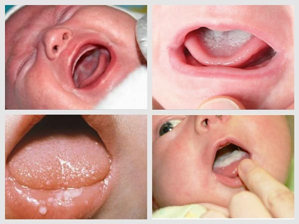

Вы заглядываете своему ребенку в рот и видите белые творожистые пятна на внутренней поверхности губ или щек, или на языке, или на небе. Этих пятен здесь раньше не было, а новоявленные пятна беспокоят новоявленных матерей. Вам не терпится поделиться свежеобнаруженными пятнами с врачом, который находится на расстоянии всего лишь телефонного звонка…

Отставьте телефон в сторону – это всего лишь молочница, грибковая инфекция во рту ребенка, вызванная дрожжами. Дрожжи всегда живут на теплых, влажных участках кожи, например во рту, в вагине, около ануса, и быстро растут на молоке. Грибковая инфекция обычно резко вспыхивает после лечения антибиотиками, поскольку антибиотики убивают также и полезные бактерии, которые в обычных условиях держат дрожжи под контролем. Если кормящая мать принимает антибиотики, они могут спровоцировать появление молочницы у малыша.
Если только не оставить молочницу без лечения, она редко беспокоит детей, хотя может иметься зуд и раздражительная болезненность во рту. Это больше неудобство, чем заболевание, хотя некоторые дети с молочницей становятся очень капризными во время кормления. Остатки молока на языке и слизистой оболочке рта могут быть спутаны с молочницей, но молоко легко можно стереть в отличие от молочницы. Если вы попытаетесь снять возникающий при молочнице налет с языка или слизистой, может остаться поверхностно разъеденный участок и иногда могут быть даже крошечные точки крови.
Скорее всего, ваш ребенок не «подхватил» молочницу у другого ребенка. Более вероятно, что причиной является чрезмерный рост собственных дрожжевых организмов вашего ребенка, которые всегда живут во рту и на коже, обычно в гармонии, и никто даже не подозревает об их существовании. В действительности дрожжи, скорее всего, впервые попали в организм вашего ребенка при проходе через ваш родовой канал.
Лечение. Поставьте в известность своего врача (нет необходимости делать это в спешном порядке), который пропишет противогрибковое средство. Кончиками пальцев или аппликатором, который прилагается к лекарству, смазывайте этим средством пятна молочницы и остальные участки слизистой оболочки рта ребенка, а также язык четыре раза в день в течение десяти дней. Вот простое домашнее средство против молочницы: смазывайте молочницу щепоткой порошка ацидофильных бактерий (на кончике пальца), продающегося в капсулах в продовольственных магазинах в отделе охлажденных продуктов (Acidophilus Lactobacillus), дважды в день в течение недели.
Дрожжи-поселенцы зачастую не очень-то охотно покидают ротовую полость. Может понадобиться несколько курсов лечения. Если вы используете соски или пустышки, кипятите их по двадцать минут каждый день. Молочница во рту, вызванная грибками, может сопровождаться высыпаниями на ягодицах.
Я поделюсь с тобой молочницей. Первым проявлением щедрости вашего ребенка может стать то, что он поделится с вами своей молочницей и передаст ее во время кормления вашим соскам. Смотрите, нет ли нижеследующих признаков молочницы на сосках: ваши соски болят на участках, закрываемых ротиком ребенка. Они слегка покраснели или имеют ярко-розовый цвет, кожа слегка припухшая, сухая и шелушащаяся. Вы можете чувствовать в сосках зуд и жжение и можете также испытывать глубокую стреляющую боль, направленную от соска внутрь, после кормления. То же лечение, что и для ротика вашего ребенка, – выписанная врачом противогрибковая мазь или безрецептурный противогрибковый крем – избавит от дрожжевой инфекции и ваши соски. Если ваши соски поражены этой инфекцией достаточно серьезно, врач может прописать вам противогрибковые препараты, принимаемые перорально. Вы также можете использовать капсулы с ацидофильными бактериями.
Марта, Уильям, Роберт, Джеймс Сирс"Ваш малыш от рождения до двух лет"